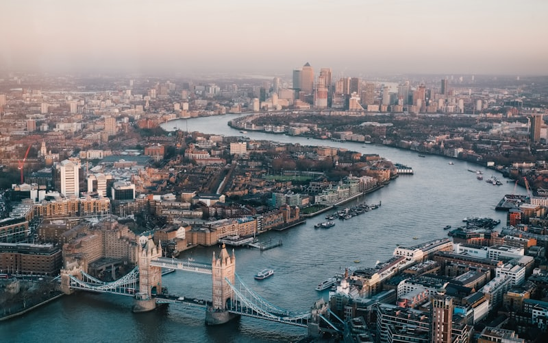

Partir en week-end en Europe pas cher est devenu accessible grâce aux compagnies aériennes low-cost et à l'essor des hébergements alternatifs. Depuis la France, de nombreuses destinations européennes permettent de s'évader le temps d'un week-end prolongé pour moins de 150 euros, vols et hébergement compris. Voici nos 7 destinations préférées, testées et approuvées, avec un budget détaillé pour chacune. Pour approfondir votre planification, retrouvez notre guide complet pour voyager en Europe.
Les clés pour un week-end en Europe vraiment pas cher
Avant de détailler nos destinations, voici les règles d'or pour voyager en Europe à petit prix. Réservez vos vols 6 à 8 semaines à l'avance et soyez flexibles sur les dates : un décalage de quelques jours peut diviser le prix par deux. Privilégiez les vols en semaine (mardi et mercredi sont souvent les moins chers). Voyagez en bagage cabine uniquement pour éviter les suppléments. Enfin, utilisez les comparateurs de vols comme Skyscanner ou Google Flights en activant les alertes de prix.
Pour l'hébergement, les auberges de jeunesse avec chambre privée offrent un excellent rapport qualité-prix. Les plateformes de réservation proposent régulièrement des promotions sur les hôtels 2-3 étoiles en basse saison. Réservez avec annulation gratuite pour sécuriser vos prix et ajuster ensuite si nécessaire.
Choisir le bon aéroport de départ
Comparez les aéroports secondaires comme Beauvais, Lyon ou Marseille : un trajet en bus depuis Paris peut parfois faire économiser 80 euros sur un vol Ryanair vers l'Europe centrale.
Budget cabine : ce qu'il faut savoir
Respectez scrupuleusement les dimensions autorisées : un bagage hors gabarit peut coûter jusqu'à 50 euros au comptoir, ruinant tout votre plan budget low-cost.
1. Porto, Portugal : dès 150€ le week-end
Quartiers à visiter
La Ribeira et Vila Nova de Gaia, reliés par le pont Dom Luís, concentrent l'essentiel des découvertes.
Porto est la destination idéale pour un premier week-end pas cher en Europe. La ville séduit par ses façades recouvertes d'azulejos, ses caves à vin de Porto à Vila Nova de Gaia et sa gastronomie généreuse. Le quartier de la Ribeira, classé UNESCO, offre des vues splendides sur le Douro. La francesinha, sandwich traditionnel portugan, se déguste pour moins de 8 euros dans les tascas locales.
Budget détaillé (2 nuits) : vol A/R depuis Paris : 40-70€ (Ryanair, EasyJet) | hébergement : 35-60€ (auberge ou hôtel économique) | repas : 25-40€ | transports locaux et activités : 15-25€. Total : 115 à 195€ par personne.
2. Cracovie, Pologne : dès 130€ le week-end
Cracovie est l'une des villes les plus abordables et les plus belles d'Europe. La place du marché (Rynek Główny), la plus grande place médiévale du continent, le château du Wawel et le quartier juif de Kazimierz regorgent de charme. La visite d'Auschwitz-Birkenau, à 70 km, est une expérience marquante et indispensable. Le coût de la vie en Pologne est parmi les plus bas d'Europe, ce qui permet de profiter pleinement sans compter.
Budget détaillé (2 nuits) : vol A/R : 30-60€ (Wizz Air, Ryanair) | hébergement : 25-50€ | repas : 20-30€ | transports et activités : 15-25€. Total : 90 à 165€ par personne.
3. Budapest, Hongrie : dès 140€ le week-end
Vie nocturne abordable
Les ruin bars du quartier juif servent des cocktails à moins de 5 €.
Bain incontournable
Le bain Széchenyi, ouvert toute l'année, coûte 20 € pour la journée.
La capitale hongroise offre une expérience digne des grandes capitales européennes à une fraction du prix. Les bains thermaux de Széchenyi, le Parlement au bord du Danube, le bastion des Pêcheurs et les fameux ruin bars du quartier juif garantissent un week-end riche en découvertes. Le soir, la vie nocturne de Budapest est réputée parmi les meilleures d'Europe, avec des cocktails à moins de 5 euros.
Budget détaillé (2 nuits) : vol A/R : 40-70€ (Wizz Air, Ryanair) | hébergement : 30-55€ | repas : 20-35€ | bains thermaux et activités : 20-30€. Total : 110 à 190€ par personne.
4. Ljubljana, Slovénie : dès 160€ le week-end
Ljubljana est une pépite méconnue d'Europe centrale. Cette petite capitale à taille humaine enchante par sa vieille ville piétonne traversée par la Ljubljanica, son château perché sur la colline et ses marchés alimentaires animés. La Slovénie est un paradis pour les amoureux de la nature : le lac de Bled, à seulement 55 km, offre l'un des paysages les plus photographiés d'Europe. L'ambiance est détendue, l'accueil chaleureux et les prix restent raisonnables.
Budget détaillé (2 nuits) : vol A/R : 50-80€ (EasyJet, Transavia) | hébergement : 35-60€ | repas : 25-40€ | excursion Bled et activités : 20-35€. Total : 130 à 215€ par personne.
5. Bratislava, Slovaquie : dès 120€ le week-end
Excursion à Vienne
Profitez de la proximité pour visiter Vienne en train en moins d'une heure depuis Bratislava.
Bratislava est probablement la capitale la moins chère d'Europe pour un week-end. Souvent négligée au profit de ses voisines Vienne et Budapest, elle possède pourtant un centre historique charmant, un château dominant le Danube et une scène gastronomique en plein essor. La bière locale coûte moins de 2 euros, et un repas complet dans un bon restaurant dépasse rarement les 10 euros. Sa proximité avec Vienne (1h de train) permet même une excursion d'une journée.
Budget détaillé (2 nuits) : vol A/R : 35-65€ (Ryanair) | hébergement : 25-45€ | repas : 15-25€ | activités : 10-20€. Total : 85 à 155€ par personne.
6. Riga, Lettonie : dès 145€ le week-end
Riga surprend par la beauté de son architecture Art nouveau, la plus importante collection au monde dans ce style. La vieille ville médiévale, classée au patrimoine mondial, le marché central installé dans d'anciens hangars à zeppelins et la vie culturelle bouillonnante font de la capitale lettone une destination originale et abordable. En été, les plages de Jūrmala, à 30 minutes en train, ajoutent une dimension balnéaire insoupçonnée.
Budget détaillé (2 nuits) : vol A/R : 45-75€ (airBaltic, Ryanair) | hébergement : 30-50€ | repas : 20-35€ | activités : 15-25€. Total : 110 à 185€ par personne.
7. Séville, Espagne : dès 155€ le week-end
Séville incarne l'essence de l'Andalousie avec son Alcázar somptueux, sa cathédrale gothique et les ruelles colorées du quartier de Santa Cruz. Les spectacles de flamenco dans les tablaos traditionnels sont des moments intenses. Le soir, la tradition des tapas permet de dîner copieusement en passant d'un bar à l'autre, chaque tapa coûtant entre 2 et 4 euros. L'atmosphère sévillane, chaleureuse et festive, est contagieuse.
Budget détaillé (2 nuits) : vol A/R : 40-70€ (Vueling, Ryanair) | hébergement : 35-60€ | repas : 25-40€ | activités et flamenco : 20-35€. Total : 120 à 205€ par personne.
Si votre budget le permet, ne manquez pas notre sélection des 10 plus belles villes d'Europe à visiter absolument, avec des incontournables comme Paris, Rome, Barcelone et Prague.
Nos conseils pour maximiser votre budget week-end
Manger comme un local
Les cantines populaires et marchés couverts proposent des repas complets pour 5 à 8 €.
Free walking tours
Ces visites à pourboire existent dans toutes les capitales et sont menées par des guides passionnés.
Pour voyager en Europe pas cher, quelques habitudes font toute la différence. Mangez comme les locaux : les marchés alimentaires, les cantines et la street food sont toujours moins chers et souvent meilleurs que les restaurants touristiques. Utilisez les transports en commun plutôt que les taxis. Renseignez-vous sur les free walking tours (visites guidées à pourboire) disponibles dans presque toutes les villes européennes, et vérifiez les jours de gratuité des musées et monuments.
Enfin, voyagez hors saison. Les mois de mars, avril, octobre et novembre offrent des prix nettement inférieurs à la haute saison estivale, avec l'avantage de villes moins bondées et d'une atmosphère plus authentique. Pour des informations complètes sur les budgets, transports et formalités, consultez notre guide voyage en Europe. Bon week-end européen !